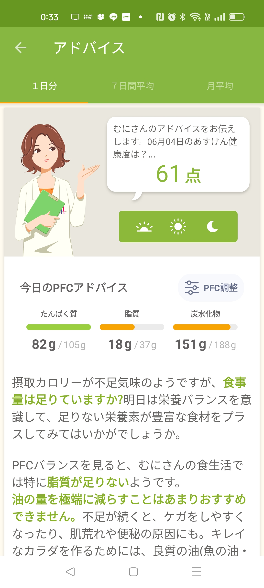

2024/06/04🌞
発令でごわす☠
皆さん聞いてくれい！！
な
なな
なんと！！！！！！！
今更、職場でスマホ触るのが禁止で、着信があっても上司の確認取ってからTELで、パソコンのアプリケーションも勤務で使わないものは、開くなとの指令が出てしまいむには大変悲しいでござるよ😢
日記更新はかどらなさそうだな…
でもでも、今日は嬉しいことに、「むにさん！なんか脚細くなてない？なにかしてる？」と同僚に言われちゃいました！！
先月から、職場の制服がパンツのOKになり、午前中は基本的に陸運事務所など移動がが多いため、毎日パンツスタイルで出勤しています👖
「むにさんのズボン、生地にゆとりできてる！すごい✨️」と美女から嬉しいお言葉頂きました😊💕
継続は力なり！！
さて、昨日と今日のむにむにダイエットコーナーへようこそ💕
6/3
昨日は、病み上がりで腰痛もありウォーキングはせず、車検登録の外出のみで歩数かせげませんでした💦とほほ
Googll Fitと連動しており歩数が少ないと、その分点数も低くなっていまうので、バランスよくお食事はできましたが、点数は低くなってしまいました😢
6/4

今日は、ウォーキング頑張りました👍️✨️
明日も頑張るぞ！！！！！！！